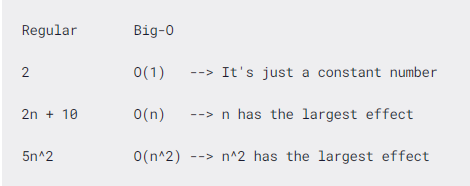
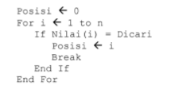
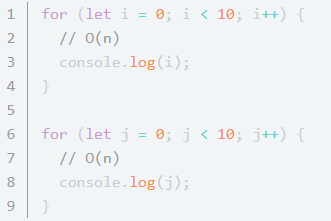

Every good programmer will use the most effective and efficient ways to solve their problem. And to do that, we must know how to minimize the complexity.
Suatu masalah dapat mempunyai banyak algoritma penyelesaian. Algoritma yang digunakan tidak saja harus benar, namun juga harus efisien . Efisiensi suatu algoritma dapat diukur dari waktu eksekusi algoritma dan kebutuhan ruang memori. Algoritma yang efisien adalah algoritma yang meminimumkan kebutuhan waktu dan ruang. Dengan menganalisis beberapa algoritma untuk suatu masalah, dapat diidentifikasi satu algoritma yang paling efisien. Besaran yang digunakan untuk menjelaskan model pengukuran waktu dan ruang ini adalah kompleksitas algoritma.
01
--------
DEFINISI
Notasi Big O diperkenalkan oleh Paul Bachmann, pertama kali di Jerman, pada tahun 1894.
Notasi Big O adalah cara untuk mengkonversi keseluruhan langkah-langkah suatu algoritma kedalam bentuk Aljabar,
yaitu dengan menghiraukan konstanta yang lebih kecil dan koefisien yang tidak
berdampak besar terhadap keseluruhan kompleksitas permasalahan yang diselesaikan oleh algoritma tersebut.
Notasi Big O yang terdiri dari time complexity atau berapa lama algoritma itu jalan, space complexity atau
berapa banyak memori yang bakal dipakai oleh algoritma.

Terdapat istilah yang dinamakan dengan, best-case, worst-case, dan average-case dalam komposisi data.
Perhatikan contoh berikut ini:

Jika data yang dicari berada pada posisi terakhir, maka terjadi n pencarian, merupakan worst-case,
sehingga Big O = O(n). Namun jika data yang dicari berada pada posisi pertama, maka pencarian hanya dilakukan sekali,
merupakan best-case, dengan Bgi O = O(1). Kenyataan yang sering terjadi, data bisa berada dimana saja,
sehingga rata-rata pencarian menjadi sebesar n/2, merupakan average-case, dengan
Big O = O(n/2) yang sebenarnya identik dengan O(n). Kompleksitas waktu
yang dinyatakan dengan Big O umumnya merujuk ke skenario average-case.
02
--------
BENTUK-BENTUK
| Notation | Name | Definisi |
|---|---|---|
| O (1) | Constant | banyaknya input yang diberikan kepada sebuah algoritma, tidak akan mempengaruhi waktu proses (runtime) dari algoritma tersebut. |
| O (n) | Linear | ketika runtime dari fungsi kita berbanding lurus dengan jumlah input yang diberikan. semakin banyak jumlah input yang diberikan, maka waktu proses atau runtime dari fungsi tersebut akan semakin besar. |
| O (n2) | Quadratic | ketika runtime dari fungsi kita adalah sebesar n2, dimana n adalah jumlah input dari fungsi tersebut. Hal tersebut bisa terjadi karena kita menjalankan fungsi linear didalam fungsi linear (n*n). |
| O (n3) | Cubic | Pada algotitma kubik, bila n dinaikkan menjadi tiga kali semula, maka running time algoritma akan menjadi delapan kali semula |
| O (2n) | exponential | biasanya digunakan dalam situasi dimana kita tidak terlalu tahu terhadap permasalahan yang dihadapi, sehingga mengharuskan kita mencoba setiap kombinasi dan permutasi dari semua kemungkinan. |
| O (log n) | Logarithmic | ketika kita memberikan input sebesar n terhadap sebuah fungsi, jumlah tahapan yang dilakukan oleh fungsi tersebut berkurang berdasarkan suatu faktor. Salah satu contohnya adalah algoritma Binary Search . |
| O (n log n) | Linearithmic, loglinear, quasilinear | Terdapat pada algoritma yang membagi persoalan menjadi beberapa persoalan yang kecil, menyelesaikan setiap persoalan secara independen, kemudian menggabungkan solusi masing-masing persoalan. |
| O (n!) | Factorial | Algoritma Factorial akan memproses setiap masukan dan menghubungkannya dengan n-1 masukan lainnya. Bila n menjadi dua kali semua, maka running time algoritma akan menjadi faktorial dari 2n |
03
--------
KEGUNAAN
Notasi Big O dapat digunakan untuk mengukur kompleksitas suatu algoritma terhadap waktu. O(n) menyatakan jumlah tahap komputasi yang dilakukan untuk menjalankan suatu algoritma sebagai fungsi dari ukuran masukan n. Suatu algoritma memiliki kompleksitas O(f(n)), dibaca orde f terhadap n, jika waktu yang diperlukan oleh algoritma mengikuti laju fungsi f(n) dengan kondisi nilai n yang besar. Notasi Big-O berfungsi dalam mengkategorikan algoritma ke fungsi yang menggambarkan upper limit atau batas atas dari pertumbuhan sebuah fungsi ketika masukan dari fungsi tersebut bertambah banyak dengan menggunakan fungsi Big-O.
04
--------
CONTOH

Kompleksitas potongan kode diatas dapat dihitung dengan mengalikan notasi-notasi setiap baris. Karena terdapat pengulangan bersarang,
maka operasi yang digunakan adalah perkalian. Artinya hasil dari pengulangan bersarang tersebut adalah: O(n) * O(n) = O(n 2).
→ Buku Desain dan Analisis Algoritma karya Fanry Siahaan, M.Kom
→ Buku Machine Learning & Reasoning Fuzzy Logic Algoritma, Manual, Matlab, & Rapid Miner
Karya Budy Santoso, Azminuddin I.S. Azis, Zohrahayaty
→ https://docplayer.info/30592099-Bab-iii-analisis-kompleksitas-algoritma.html
→ https://www.sixv.com/algoritma/algoritma-notasi-big-o/
→ https://rizafahmi.com/2020/03/21/notasi-o-besar-big-o-notation/
→ https://medium.com/bee-solution-partners/penjelasan-sederhana-tentang-time-complexity-dan-big-o-notation-4337ba275cfe